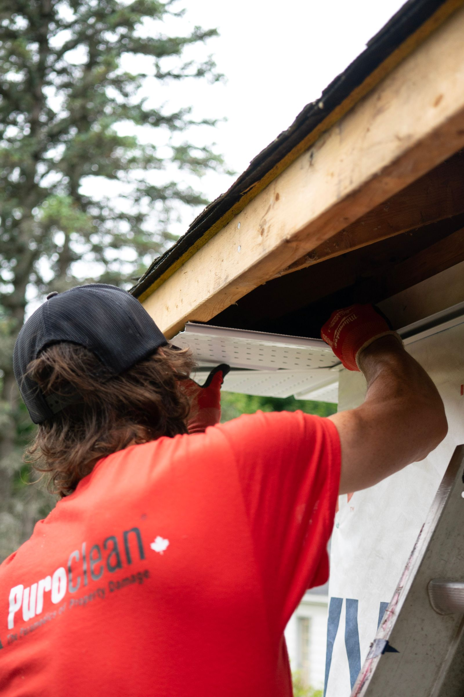

Seamless gutters · Bryan, TX & Burleson County
One clean run. No seams to fail.
DC Custom Seamless Gutters fabricates and installs gutters on site, cut to the exact run of your roofline — 5.0 stars across 19 reviews, some going back years, for careful, detail-first work.

Stock photo (Pexels, photographer Chris Shafer) — not a photo of DC Custom Seamless Gutters or its crew.
What we install
Gutters cut to fit, not pieced together
General categories of gutter work — confirm your exact job by phone.
Seamless gutter installation
Fabricated on site to the exact length of your roofline — no seams for leaks to start at.
Gutter guards & leaf protection
Covers that keep leaves and debris from clogging the run.
Cleaning & maintenance
Gutters cleared out so water actually makes it to the downspout.
Repair & resealing
Sagging sections, loose brackets, and leaks fixed in place.
Downspout & drainage
Water routed away from the foundation, not pooling next to it.
Color-matched fascia
Gutters finished to match your home's existing trim.
These are general categories of gutter work — call (979) 229-8432 to confirm DC Custom can handle your specific job.
About
Nearly a decade of reviews, still 5.0
DC Custom Seamless Gutters has been doing gutter work in the Bryan area long enough that its earliest public reviews date back roughly eight years — and the rating has stayed a perfect 5.0 the entire time, across 19 reviews.
What shows up again and again: careful, detail-oriented crews, a fair price, and a warranty behind the work. One reviewer specifically called out how much attention the crew paid to installation details most homeowners wouldn't even know to look for.
Business details verified via DC Custom Seamless Gutters’ public Google Business listing, checked 2026-09-03. Full sourcing is in this demo’s README.
On Google
What Google reviewers keep mentioning
Google groups its own reviews of DC Custom Seamless Gutters by the words reviewers use most. Here’s exactly what that tag list shows, straight from the listing — not our summary, not an invented quote:
- job ×9
- gutters ×3
- gutter replacement ×2
- great job ×2
Full written reviews will appear here once connected — nothing invented, nothing edited, exactly what’s posted on Google.
5.0 rating · 19 reviews · review-tag counts, all from DC Custom Seamless Gutters’ public Google Maps listing — verified 2026-09-03.
Service area
Bryan, TX and Burleson County and nearby areas — per Google's own "Areas served" data on the listing. No public street address exists for this business, so that's what's shown here rather than a guessed address.
Hours
Google showed “Closed · Opens 8 AM Fri” when checked on 2026-09-03. Call or message to confirm before you plan around it.
Get in touch
Gutters overdue for a look?
Call and describe your roofline — new install, a repair, or just a cleaning. DC Custom will fabricate it to fit.
Call (979) 229-8432